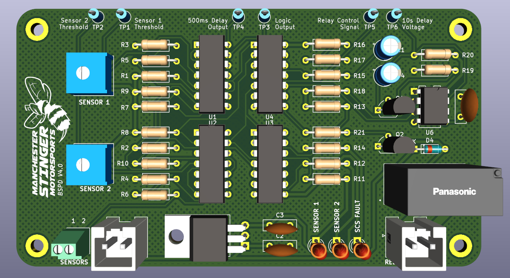
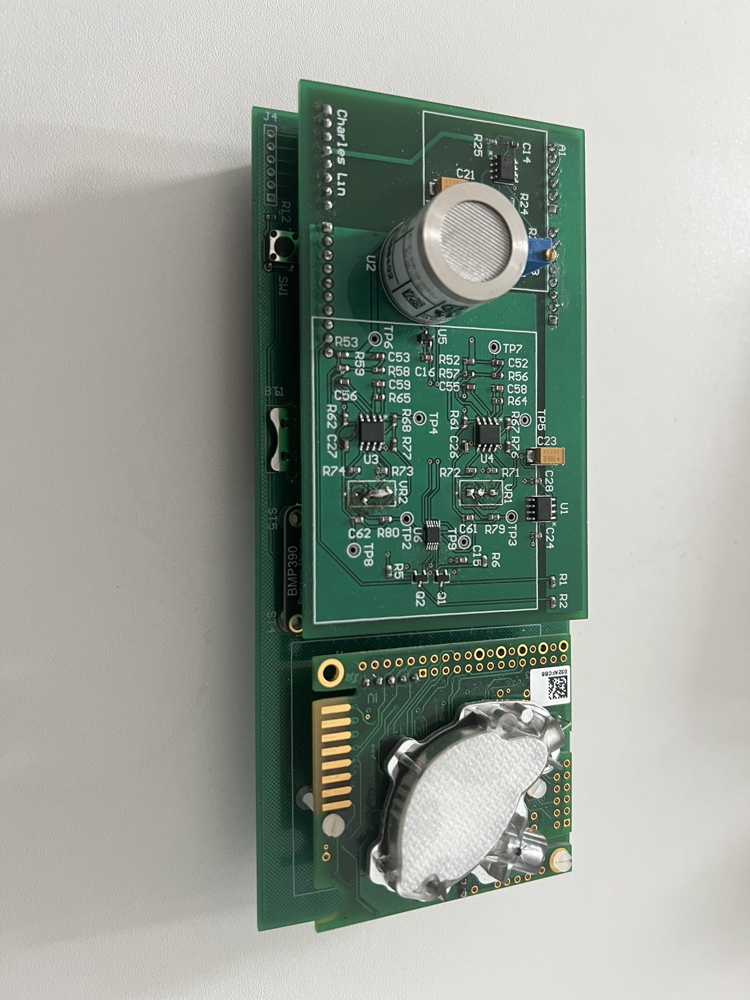

Work
Engineering Projects


Embedded Systems
Embedded Systems Project — Line-Following Buggy
[One-line placeholder description for the line-following buggy.]
Read More
Research
Dual Gas-Sensing Platform for Peatland GHG Research
[One-line placeholder description for the gas-sensing platform.]
Read More